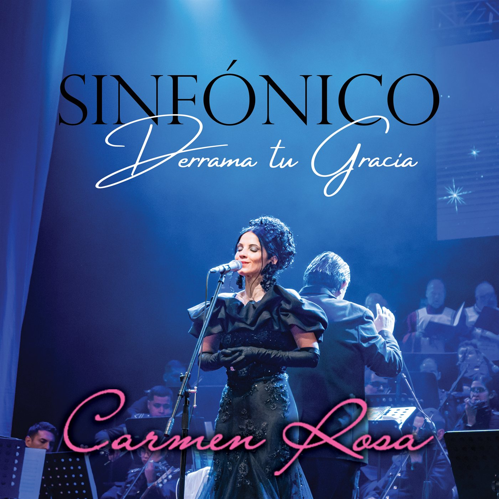

Carmen Rosa Sinfónico — Derrama Tu Gracia
Una experiencia musical donde la fe, la belleza y la majestuosidad sinfónica se encuentran para elevar el alma.
“Carmen Rosa Sinfónico – Derrama Tu Gracia” es una producción de arte musical que fusiona la profundidad espiritual de la música sacra con la grandeza y elegancia de los arreglos orquestales, creando un sonido de carácter universal y una experiencia que trasciende fronteras.
Con una interpretación cargada de sensibilidad, fuerza y espiritualidad, Carmen Rosa transforma cada canción en una invitación al encuentro con Dios, donde la música se convierte en oración, contemplación y expresión del Amor Divino.
Seguir leyendoMostrar menos
Esta producción destaca por su riqueza musical, la excelencia de sus arreglos sinfónicos y una propuesta artística que une tradición y modernidad, llevando al público a un viaje sonoro de profunda emoción y belleza.
“Carmen Rosa Sinfónico – Derrama Tu Gracia” no es solamente un álbum; es una experiencia espiritual y artística que toca la fibra más íntima de los corazones, inspira amor y esperanza, y nos hace sentir, a través de la música, la presencia de la gracia de Dios en nuestras vidas.

“Sinfónico — Derrama Tu Gracia” presenta la voz única de Carmen Rosa junto a una majestuosa orquesta y un coro angelical, en una celebración musical de gracia, fe y espiritualidad.
MÚSICA QUE ELEVA
Y TRANSFORMA
“Una propuesta audiovisual donde la música, la espiritualidad y el mensaje se unen para crear una experiencia de oración, esperanza y encuentro.”
SOBRE
CARMEN ROSA
Con mucha alegría presentamos a Carmen Rosa, una voz que inspira, que ora y evangeliza a través de la música.
Carmen Rosa es una destacada cantautora internacional de música cristiana cuya voz ha cantado en vivo a lo largo de cinco continentes, con una misión artística donde se unen música, mensaje y servicio.
A través de sus producciones, conciertos y presencia en medios, Carmen Rosa ha llevado una propuesta musical inspirada en la fe y en valores universales de esperanza, amor y misericordia, creando puentes entre el cielo y los corazones.
Conocer más sobre Carmen RosaMostrar menos
A través de sus ministerios de música y de caridad, Carmen Rosa consistentemente durante más de una década ha llevado comida y ayuda, acompañamiento espiritual y esperanza a comunidades en extrema pobreza, especialmente niños y familias necesitadas en México, Guatemala, Argentina, Filipinas, Pakistán, entre otros países.
La música se convierte en una herramienta de evangelización, de Amor y servicio a los menos afortunados.
MINISTERIO
“PARA LA GLORIA DE DIOS”
es una misión.
El Ministerio “Para la Gloria de Dios” representa el corazón espiritual de la propuesta de Carmen Rosa. A través de la música, la evangelización y el encuentro con las comunidades, su ministerio busca llevar un mensaje de fe, esperanza, amor y misericordia a cada persona.
La música como instrumento para anunciar un mensaje de fe.
Una propuesta que busca acercarse a las personas y sus comunidades.
Canciones que acompañan, consuelan e inspiran.
FILANTROPÍA
en amor y servicio
A través de su ministerio, Carmen Rosa ha llevado comida y ayuda, acompañamiento espiritual y esperanza a comunidades en extrema pobreza, especialmente a niños y familias necesitadas. La música se convierte en una herramienta de evangelización y de servicio.
“Entrega de comida y apoyo a comunidades en situación de extrema pobreza.”
“Presencia cercana, escucha y acompañamiento espiritual.”
“Una misión orientada especialmente a niños y familias necesitadas.”
UNA VIDA
DEDICADA AL CANTO
La voz única de Carmen Rosa ha inspirado y conmovido el corazón de miles de personas con su hermoso cantar y sus composiciones originales, en presentaciones en vivo realizadas en más de ochocientas (800) iglesias en cinco (5) continentes, donde ha compartido un mensaje de fe, esperanza, consuelo y amor.
Con una pasión inagotable por su arte y un profundo compromiso con su misión, ha dejado una marca significativa en la escena de la música cristiana.
Su trabajo no termina en el escenario: su compromiso con las comunidades en extrema pobreza es una extensión natural de su ministerio musical. A través de su obra de caridad, transforma el mensaje de sus canciones en acciones concretas de amor y servicio. De ahí surge el apelativo de “Niña de la Caridad”.
UNA VOZ QUE HA
RECORRIDO EL MUNDO
CUATRO DIMENSIONES,
UNA MISMA HISTORIA
La música como arte, oración, evangelización y servicio.
Una cantautora internacional con una propuesta musical y audiovisual de alto nivel.
Una obra inspirada en la fe, la evangelización y los valores universales de esperanza, amor y misericordia.
“Para la Gloria de Dios”, donde la música se convierte en encuentro, acompañamiento y servicio.
Una labor filantrópica dirigida especialmente a comunidades en extrema pobreza, niños y familias necesitadas.
OBRA MUSICAL
Una voz hermosa y única, una orquesta imponente de película cinematográfica y un coro celestial en una auténtica celebración de la gracia divina, para su consideración Latin Grammy 2026.
Escuchar su músicaSEGUIR A CARMEN ROSA
Todos sus canales oficiales —redes, videos y plataformas de audio— reunidos en un mismo lugar.